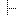

%ICON{"help"}% results in: ICON{} assumes a GIF image of 16 x 16 pixels. Use a HTML img tag with %ICONURL{}% for image with other sizes. See the tables below for copy-paste examples.
Other usage: see below.
| File Name | Description | Write... | |
|---|---|---|---|
airplane.gif |
Airplane | %ICON{airplane}% |
|
award.gif |
Award | %ICON{award}% |
|
barcode.gif |
Barcode | %ICON{barcode}% |
|
bed.gif |
Bed | %ICON{bed}% |
|
bomb.gif |
Bomb | %ICON{bomb}% |
|
book.gif |
Book | %ICON{book}% |
|
blank.gif |
Blank box | %ICON{blank}% |
|
blank-bg.gif |
Blank box, transparent | %ICON{blank-bg}% |
|
bubble.gif |
Speech bubble | %ICON{bubble}% |
|
bug.gif |
Bug | %ICON{bug}% |
|
 |
chart-bar.gif |
Bar chart | %ICON{chart-bar}% |
chart-pie.gif |
Pie chart | %ICON{chart-pie}% |
|
comments.gif |
Comments | %ICON{comments}% |
|
connections.gif |
Connections | %ICON{connections}% |
|
database.gif |
Database | %ICON{database}% |
|
days.gif |
Days, Calendar | %ICON{days}% |
|
download.gif |
Download | %ICON{download}% |
|
facebook.gif |
%ICON{facebook}% |
||
fax.gif |
Fax | %ICON{fax}% |
|
filter.gif |
Filter | %ICON{filter}% |
|
gear.gif |
Gear | %ICON{gear}% |
|
globe.gif |
Globe | %ICON{globe}% |
|
graduation.gif |
Graduation | %ICON{graduation}% |
|
map.gif |
Map | %ICON{map}% |
|
hand.gif |
Pointing hand | %ICON{hand}% |
|
heart.gif |
Heart | %ICON{heart}% |
|
 |
help.gif |
Help | %H%, %ICON{help}% |
info.gif |
Info | %ICON{info}% |
|
legal.gif |
Legal | %ICON{legal}% |
|
linkedin.gif |
%ICON{linkedin}% |
||
hourglass.gif |
Hour glass (clock) | %ICON{hourglass}% |
|
luggage.gif |
Luggage | %ICON{luggage}% |
|
map.gif |
Map | %ICON{map}% |
|
mechanics.gif |
Mechanics | %ICON{mechanics}% |
|
megaphone.gif |
Megaphone | %ICON{megaphone}% |
|
mobile.gif |
Mobile | %ICON{mobile}% |
|
more.gif |
Read more | %ICON{more}% |
|
more-small.gif |
Read more, 13x13 | <img src="%ICONURL{more-small}%" width="13" height="13" alt="Read more" border="0" /> |
|
move.gif |
Move | %ICON{move}% |
|
 |
note.gif |
Note | %ICON{note}% |
parked.gif |
Parked | %ICON{parked}% |
|
parts.gif |
Parts | %ICON{parts}% |
|
pencil.gif |
Pencil / Refactor / Edit | %P%, %ICON{pencil}% |
|
phone.gif |
Phone | %ICON{phone}% |
|
photo.gif |
Photo, 13x10 | <img src="%ICONURL{photo}%" width="13" height="10" alt="Photo" border="0" /> |
|
plug.gif |
Plug | %ICON{plug}% |
|
presentation.gif |
Presentation | %ICON{presentation}% |
|
process.gif |
Process | %ICON{process}% |
|
profile.gif |
Profile | %ICON{profile}% |
|
puzzle.gif |
Puzzle | %ICON{puzzle}% |
|
question.gif |
Question | %ICON{question}% |
|
quiet.gif |
Quiet | %ICON{quiet}% |
|
radioactive.gif |
Radioactive | %ICON{radioactive}% |
|
 |
rfc.gif |
Request for comments | %ICON{rfc}% |
sitemap.gif |
Site map | %ICON{sitemap}% |
|
sitetree.gif |
Site tree | %ICON{sitetree}% |
|
skype.gif |
Skype | %ICON{skype}% |
|
socket.gif |
Socket | %ICON{socket}% |
|
sort.gif |
Sort | %ICON{sort}% |
|
stargold.gif |
Gold star, favorites | %ICON{stargold}% |
|
starred.gif |
Red star, highlight | %S%, %ICON{starred}% |
|
star-full.gif |
Star (full) | %ICON{star-full}% |
|
star-half.gif |
Star (half) | %ICON{star-half}% |
|
star-none.gif |
Star (none) | %ICON{star-none}% |
|
 |
statistics.gif |
Statistics | %ICON{statistics}% |
stop.gif |
Stop | %ICON{stop}% |
|
support.gif |
Support | %ICON{support}% |
|
switch.gif |
Switch | %ICON{switch}% |
|
 |
target.gif |
Target | %ICON{target}% |
target-blue.gif |
Target - blue | %ICON{target-blue}% |
|
target-gray.gif |
Target - gray | %ICON{target-gray}% |
|
target-green.gif |
Target - green | %ICON{target-green}% |
|
target-orange.gif |
Target - orange | %ICON{target-orange}% |
|
target-red.gif |
Target - red | %ICON{target-red}% |
|
thumbs-down.gif |
Thumbs-down | %ICON{thumbs-down}% |
|
thumbs-up.gif |
Thumbs-up | %ICON{thumbs-up}% |
|
tip.gif |
Tip, idea | %T%, %ICON{tip}% |
|
toolbox.gif |
Toolbox | %ICON{toolbox}% |
|
tooth.gif |
Tooth | %ICON{tooth}% |
|
traffic-light.gif |
Traffic light | %ICON{traffic-light}% |
|
twitter.gif |
%ICON{twitter}% |
||
vcard.gif |
VCard | %ICON{vcard}% |
|
video.gif |
Video, 13x10 | <img src="%ICONURL{video}%" width="13" height="10" alt="Video" border="0" /> |
|
 |
warning.gif |
Warning, important | %X%, %ICON{warning}% |
watch.gif |
Watch | %ICON{watch}% |
|
wip.gif |
Work in progress, under construction | %ICON{wip}% |
|
 |
wrench.gif |
Wrench, tools | %ICON{wrench}% |
ying-yang.gif |
Ying Yang | %ICON{ying-yang}% |
| File Name | Description | Write... | |
|---|---|---|---|
viewtopic.gif |
View topic | %ICON{viewtopic}% |
|
printtopic.gif |
Print topic | %ICON{printtopic}% |
|
refreshtopic.gif |
Refresh topic | %ICON{refreshtopic}% |
|
 |
newtopic.gif |
New topic | %ICON{newtopic}% |
edittopic.gif |
Edit topic | %ICON{edittopic}% |
|
save.gif |
Save | %ICON{save}% |
|
attachfile.gif |
Attach file | %ICON{attachfile}% |
|
download.gif |
Download | %ICON{download}% |
|
trash.gif |
Trash | %ICON{trash}% |
|
 |
searchtopic.gif |
Search topic | %ICON{searchtopic}% |
 |
search-small.gif |
Small search button, 13x13 | <img src="%ICONURL{search-small}%" width="13" height="13" alt="Search" border="0" /> |
topicbacklinks.gif |
Topic back-links | %ICON{topicbacklinks}% |
|
topicdiffs.gif |
Topic difference | %ICON{topicdiffs}% |
|
| |
statistics.gif |
Statistics | %ICON{statistics}% |
 |
index.gif |
Index | %ICON{index}% |
indexlist.gif |
Index list | %ICON{indexlist}% |
|
cachetopic.gif |
Cache topic | %ICON{cachetopic}% |
|
folder.gif |
Folder | %ICON{folder}% |
|
 |
table.gif |
Table | %ICON{table}% |
edittable.gif |
Edit table | %ICON{edittable}% |
|
uweb-bo.gif |
UWEB (Universal Wiki Edit Button), blue, outline | %ICON{uweb-bo}% |
|
uweb-bo12.gif |
UWEB, blue, outline, small 12x12 | <img src="%ICONURL{uweb-bo12}%" width="12" height="12" alt="Edit" border="0" /> |
|
uweb-g.gif |
UWEB, green (default) | %ICON{uweb-g}% |
|
uweb-gs.gif |
UWEB, green, square | %ICON{uweb-gs}% |
|
uweb-m12.gif |
UWEB, black, small 12x12 | <img src="%ICONURL{uweb-m12}%" width="12" height="12" alt="Edit" border="0" /> |
|
uweb-o.gif |
UWEB, orange | %ICON{uweb-o}% |
|
uweb-o12.gif |
UWEB, orange, small 12x12 | <img src="%ICONURL{uweb-o12}%" width="12" height="12" alt="Edit" border="0" /> |
|
uweb-oo.gif |
UWEB, orange, outline | %ICON{uweb-oo}% |
|
uweb-os.gif |
UWEB, orange, square | %ICON{uweb-os}% |
| File Name | Description | Write... | |
|---|---|---|---|
person.gif |
Person | %ICON{person}% |
|
persons.gif |
Persons | %ICON{persons}% |
|
group.gif |
Group | %ICON{group}% |
|
useractive.gif |
Active user | %ICON{useractive}% |
|
userinactive.gif |
Inactive user | %ICON{userinactive}% |
|
building.gif |
Building | %ICON{building}% |
|
buildings.gif |
Buildings | %ICON{buildings}% |
|
logout.gif |
Log out | %ICON{logout}% |
|
key.gif |
Key | %ICON{key}% |
|
lock.gif |
Lock | %ICON{lock}% |
|
locktopic.gif |
Locked topic | %ICON{locktopic}% |
|
locktopicgray.gif |
Locked topic, gray | %ICON{locktopicgray}% |
|
lockfolder.gif |
Locked folder | %ICON{lockfolder}% |
|
lockfoldergray.gif |
Locked folder, gray | %ICON{lockfoldergray}% |
| File Name | Description | Write... | |
|---|---|---|---|
changes.gif |
Changes | %ICON{changes}% |
|
changes-small.gif |
Changes (small), 13x13 | <img src="%ICONURL{changes-small}%" width="13" height="13" alt="Changes" border="0" /> |
|
recentchanges.gif |
Recent changes | %ICON{recentchanges}% |
|
mail.gif |
%ICON{mail}% |
||
notify.gif |
Notify | %ICON{notify}% |
|
feed.gif |
RSS feed, rounded corners | %ICON{feed}% |
|
 |
rss.gif |
RSS feed, gray box | %ICON{rss}% |
rss-feed.gif |
RSS feed, 36x14 | <img src="%ICONURL{rss-feed}%" width="36" height="14" alt="RSS feed" border="0" /> |
|
rss-small.gif |
RSS feed, text | %ICON{rss-small}% |
|
xml-feed.gif |
XML feed, 36x14 | <img src="%ICONURL{xml-feed}%" width="36" height="13" alt="XML feed" border="0" /> |
|
xml-small.gif |
XML feed | %ICON{xml-small}% |
| File Name | Description | Write... | |
|---|---|---|---|
new.gif |
NEW, 30x16 | %N%, <img src="%ICONURL{new}%" width="30" height="16" alt="New" border="0" /> |
|
todo.gif |
TODO, 37x16 | <img src="%ICONURL{todo}%" width="37" height="16" alt="TODO" border="0" /> |
|
updated.gif |
UPDATED, 55x16 | %U%, <img src="%ICONURL{updated}%" width="55" height="16" alt="UPDATED" border="0" /> |
|
done.gif |
DONE, 37x16 | <img src="%ICONURL{done}%" width="37" height="16" alt="Done" border="0" /> |
|
closed.gif |
CLOSED, 48x16 | <img src="%ICONURL{closed}%" width="48" height="16" alt="Closed" border="0" /> |
|
 |
processing.gif |
Processing | %ICON{processing}% |
 |
processing-bg.gif |
Processing, transparent background | %ICON{processing-bg}% |
 |
processing-32.gif |
Processing, 32x32 | <img src="%ICONURL{processing-32}%" width="32" height="32" alt="Processing" border="0" /> |
processing-32-bg.gif |
Processing, 32x32, transparent | <img src="%ICONURL{processing-32-bg}%" width="32" height="32" alt="Processing" border="0" /> |
|
minus.gif |
Minus | %ICON{minus}% |
|
plus.gif |
Plus | %ICON{plus}% |
|
choice-cancel.gif |
Cancel | %ICON{choice-cancel}% |
|
choice-no.gif |
No | %ICON{choice-no}% |
|
choice-yes.gif |
Yes / Done | %Y%, %ICON{choice-yes}% |
|
unchecked.gif |
Unchecked checkbox | %ICON{unchecked}% |
|
checked.gif |
Checked checkbox | %ICON{checked}% |
|
flag.gif |
Flag | %ICON{flag}% |
|
flag-gray.gif |
Gray flag | %ICON{flag-gray}% |
|
flag-gray-small.gif |
Small gray flag, 13x13 | <img src="%ICONURL{flag-gray-small}%" width="13" height="13" alt="Flag" border="0" /> |
|
led-aqua.gif |
Aqua led | %ICON{led-aqua}% |
|
 |
led-blue.gif |
Blue led | %ICON{led-blue}% |
led-gray.gif |
Gray led | %ICON{led-gray}% |
|
 |
led-green.gif |
Green led | %ICON{led-green}% |
 |
led-orange.gif |
Orange led | %ICON{led-orange}% |
led-purple.gif |
Purple led | %ICON{led-purple}% |
|
led-red.gif |
Red led | %ICON{led-red}% |
|
led-yellow.gif |
Yellow led | %ICON{led-yellow}% |
|
led-box-aqua.gif |
Aqua led | %ICON{led-box-aqua}% |
|
led-box-blue.gif |
Blue led | %ICON{led-box-blue}% |
|
led-box-gray.gif |
Gray led | %ICON{led-box-gray}% |
|
led-box-green.gif |
Green led | %ICON{led-box-green}% |
|
led-box-orange.gif |
Orange led | %ICON{led-box-orange}% |
|
led-box-purple.gif |
Purple led | %ICON{led-box-purple}% |
|
led-box-red.gif |
Red led | %ICON{led-box-red}% |
|
led-box-yellow.gif |
Yellow led | %ICON{led-box-yellow}% |
|
tag.gif |
Tag | %ICON{tag}% |
|
tag-blue.gif |
Blue tag | %ICON{tag-blue}% |
|
tag-brown.gif |
Brown tag | %ICON{tag-brown}% |
|
tag-green.gif |
Green tag | %ICON{tag-green}% |
|
tag-magenta.gif |
Magenta tag | %ICON{tag-magenta}% |
|
tag-orange.gif |
Orange tag | %ICON{tag-orange}% |
|
tag-purple.gif |
Purple tag | %ICON{tag-purple}% |
|
tag-red.gif |
Red tag | %ICON{tag-red}% |
|
tag-yellow.gif |
Yellow tag | %ICON{tag-yellow}% |
| File Name | Description | Write... | |
|---|---|---|---|
 |
home.gif |
Home | %ICON{home}% |
sitemap.gif |
Site map | %ICON{sitemap}% |
|
sitetree.gif |
Site tree | %ICON{sitetree}% |
|
topicbacklinks.gif |
Topic back-links | %ICON{topicbacklinks}% |
|
arrowdot.gif |
Meet here (arrows to red dot) | %ICON{arrowdot}% |
|
external.gif |
External site | %ICON{external}% |
|
left.gif |
Left | %ICON{left}% |
|
right.gif |
Right | %ICON{right}% |
|
up.gif |
Up | %ICON{up}% |
|
down.gif |
Down | %ICON{down}% |
|
arrowbleft.gif |
Arrow blue left | %ICON{arrowbleft}% |
|
arrowbright.gif |
Arrow blue right | %ICON{arrowbright}% |
|
arrowbup.gif |
Arrow blue up | %ICON{arrowbup}% |
|
arrowbdown.gif |
Arrow blue down | %ICON{arrowbdown}% |
|
arrowleft.gif |
Arrow left | %ICON{arrowleft}% |
|
arrowright.gif |
Arrow right | %M%, %ICON{arrowright}% |
|
 |
arrowup.gif |
Arrow up | %ICON{arrowup}% |
arrowdown.gif |
Arrow down | %ICON{arrowdown}% |
|
go_start.gif |
Go to start | %ICON{go_start}% |
|
go_fb.gif |
Go fast back | %ICON{go_fb}% |
|
go_back.gif |
Go back | %ICON{go_back}% |
|
go_forward.gif |
Go forward | %ICON{go_forward}% |
|
go_ff.gif |
Go fast forward | %ICON{go_ff}% |
|
go_end.gif |
Go to end | %ICON{go_end}% |
| File Name | Description | Write... | |
|---|---|---|---|
monospace.gif |
Monospace | %ICON{monospace}% |
|
 |
proportional.gif |
Proportional | %ICON{proportional}% |
tablesortdiamond.gif |
Sort table | <img src="%ICONURL{tablesortdiamond}%" width="11" height="13" alt="Sort table" border="0" /> |
|
 |
tablesortdown.gif |
Sort table descending | <img src="%ICONURL{tablesortdown}%" width="11" height="13" alt="Sort table descending" border="0" /> |
 |
tablesortup.gif |
Sort table ascending | <img src="%ICONURL{tablesortup}%" width="11" height="13" alt="Sort table ascending" border="0" /> |
toggleopen.gif |
Open toggle, Twisty open toggle | %ICON{toggleopen}% |
|
 |
toggleclose.gif |
Close toggle, Twisty close toggle | %ICON{toggleclose}% |
toggleopen-small.gif |
Open toggle, Twisty open toggle | %ICON{toggleopen-small}% |
|
toggleclose-small.gif |
Close toggle, Twisty close toggle | %ICON{toggleclose-small}% |
|
toggleopen-mini.gif |
Open toggle, Twisty open toggle | <img src="%ICONURL{toggleopen-mini}%" width="7" height="9" alt="Open" border="0" /> |
|
toggleclose-mini.gif |
Close toggle, Twisty close toggle | <img src="%ICONURL{toggleclose-mini}%" width="7" height="9" alt="Close" border="0" /> |
|
 |
toggleopenleft.gif |
Open toggle, Twisty open toggle | %ICON{toggleopenleft}% |
toggleopenleft-small.gif |
Open toggle, Twisty open toggle | %ICON{toggleopenleft-small}% |
|
web-bg.gif |
Web background, used in WebLeftBarWebsList | %ICON{web-bg}% |
|
 |
web-bg-small.gif |
Web background, 13x13 | <img src="%ICONURL{web-bg-small}%" width="13" height="13" alt="Web" border="0" /> |
| File Name | Description | Write... | |
|---|---|---|---|
addon.gif |
Add-on | %ICON{addon}% |
|
application.gif |
Application | %ICON{application}% |
|
 |
code.gif |
Code | %ICON{code}% |
package.gif |
Package | %ICON{package}% |
|
 |
plugin.gif |
Plugin | %ICON{plugin}% |
tag.gif |
Tag | %ICON{tag}% |
|
searchpackage.gif |
Search package | %ICON{searchpackage}% |
|
searchtag.gif |
Search tag | %ICON{searchtag}% |
|
skin.gif |
Skin | %ICON{skin}% |
| File Name | Description | Write... | |
|---|---|---|---|
line_ld.gif |
Line graph left-down | %ICON{line_ld}% |
|
line_lr.gif |
Line graph left-right | %ICON{line_lr}% |
|
line_lrd.gif |
Line graph left-right-down | %ICON{line_lrd}% |
|
line_rd.gif |
Line graph right-down | %ICON{line_rd}% |
|
line_ud.gif |
Line graph up-down | %ICON{line_ud}% |
|
line_udl.gif |
Line graph up-down-left | %ICON{line_udl}% |
|
line_udlr.gif |
Line graph up-down-left-right | %ICON{line_udlr}% |
|
line_udr.gif |
Line graph up-down-right | %ICON{line_udr}% |
|
line_ul.gif |
Line graph up-left | %ICON{line_ul}% |
|
line_ulr.gif |
Line graph up-left-right | %ICON{line_ulr}% |
|
line_ur.gif |
Line graph up-right | %ICON{line_ur}% |
|
line_ur_gray.gif |
Line graph up-right, gray | %ICON{line_ur_gray}% |
|
dot_ld.gif |
Dot graph left-down | %ICON{dot_ld}% |
|
dot_lr.gif |
Dot graph left-right | %ICON{dot_lr}% |
|
dot_lrd.gif |
Dot graph left-right-down | %ICON{dot_lrd}% |
|
 |
dot_rd.gif |
Dot graph right-down | %ICON{dot_rd}% |
 |
dot_ud.gif |
Dot graph up-down | %ICON{dot_ud}% |
 |
dot_udl.gif |
Dot graph up-down-left | %ICON{dot_udl}% |
dot_udlr.gif |
Dot graph up-down-left-right | %ICON{dot_udlr}% |
|
|  | dot_udr.gif |
Dot graph up-down-right | %ICON{dot_udr}% |
dot_ul.gif |
Dot graph up-left | %ICON{dot_ul}% |
|
dot_ulr.gif |
Dot graph up-left-right | %ICON{dot_ulr}% |
|
 |
dot_ur.gif |
Dot graph up-right | %ICON{dot_ur}% |
| |
empty.gif |
Empty transparent 16x16 spacer | %ICON{empty}% |
parent_gray.gif |
Parent arrow | %ICON{parent_gray}% |
%ICON{pdf}% to show the | File Name | Name | Write... | |
|---|---|---|---|
as.gif |
ActionScript | %ICON{as}% |
|
air.gif |
Adobe Air | %ICON{air}% |
|
bat.gif |
MS-DOS batch file | %ICON{bat}% |
|
bmp.gif |
Bitmap | %ICON{bmp}% |
|
c.gif |
C source code file | %ICON{c}% |
|
css.gif |
Cascading Style Sheet file | %ICON{css}% |
|
dll.gif |
Dynamic Linked Library; Microsoft application file | %ICON{dll}% |
|
doc.gif |
Microsoft Word file | %ICON{doc}% |
|
 |
else.gif |
Unknown file format | %ICON{else}% |
eml.gif |
Microsoft Outlook e-mail file | %ICON{eml}% |
|
exe.gif |
Microsoft Executable file | %ICON{exe}% |
|
fla.gif |
Macromedia Flash Movie | %ICON{fla}% |
|
fon.gif |
Windows bitmapped font file | %ICON{fon}% |
|
gif.gif |
GIF | %ICON{gif}% |
|
h.gif |
Header file | %ICON{h}% |
|
hlp.gif |
Standard help file | %ICON{hlp}% |
|
html.gif |
HTML | %ICON{html}% |
|
java.gif |
Java source code file | %ICON{java}% |
|
jpg.gif |
JPEG | %ICON{jpg}% |
|
js.gif |
JavaScript | %ICON{js}% |
|
mdb.gif |
Microsoft Access database File | %ICON{mdb}% |
|
mov.gif |
Quicktime movie | %ICON{mov}% |
|
 |
mp3.gif |
MP3 | %ICON{mp3}% |
pdf.gif |
%ICON{pdf}% |
||
pl.gif |
Perl source code file | %ICON{pl}% |
|
 |
png.gif |
PNG | %ICON{png}% |
ppt.gif |
PowerPoint | %ICON{ppt}% |
|
ps.gif |
Postscript | %ICON{ps}% |
|
psd.gif |
Photoshop document | %ICON{psd}% |
|
py.gif |
Python source code file | %ICON{py}% |
|
ram.gif |
RealAudio | %ICON{ram}% |
|
reg.gif |
Registry file | %ICON{reg}% |
|
sh.gif |
Unix shell script | %ICON{sh}% |
|
sniff.gif |
sniff | %ICON{sniff}% |
|
svg.gif |
SVG (Scalable Vector Graphics) | %ICON{svg}% |
|
swf.gif |
SWF (Shockwave Flash) | %ICON{swf}% |
|
 |
ttf.gif |
True Type font | %ICON{ttf}% |
txt.gif |
Text | %ICON{txt}% |
|
vector.gif |
Generic vector | %ICON{vector}% |
|
vsd.gif |
Visio document | %ICON{vsd}% |
|
wav.gif |
Waveform sound file | %ICON{wav}% |
|
wri.gif |
Windows Write | %ICON{wri}% |
|
xls.gif |
Microsoft Excel Spreadsheet | %ICON{xls}% |
|
xml.gif |
XML | %ICON{xml}% |
|
xsl.gif |
XSL (XML style sheet) | %ICON{xsl}% |
|
zip.gif |
Compressed Zip archive | %ICON{zip}% |
In Main.SitePreferences! set a macro for an ICON, for example:Full path:* Set H = %ICON{help}%Now you can use the icon by writing%H%For extended use, check outFoswiki:Extensions.SmiliesPlugin that uses a different short hand than%MACROS%.
In any topic, writeTo create an image with a link, write:%PUBURL%/%SYSTEMWEB%/OriginalDocumentGraphics/help.gifto showOriginalDocumentGraphicswith the topic name.
To get the full URL of the icon, use ICONURL:[[WebHome][%ICON{home}% Home]]to get:Home To get rid of the underline under the space, write:
[[WebHome][%ICON{home}%]] [[WebHome][Home]]to get:
%ICONURL{"toggleopen"}%gets you the image path:http://biostat1478.dhcp.mc.vanderbilt.edu/foswiki/pub/System/DocumentGraphics/toggleopen.png
and that will get rendered as: